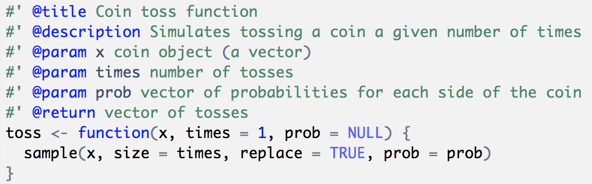

2 Tossing Function
2.1 Introduction
In the previous chapter we wrote code to simulate tossing a coin multiple times. First we created a virtual coin as a two-element vector. Secondly, we discussed the function sample() to obtain a sample, with replacement, of a given size. And finally we put everything together: a coin object passed to sample(), to simulate tossing a coin.
# tossing a coin 5 times
coin <- c("heads", "tails")
sample(coin, size = 5, replace = TRUE)
#> [1] "heads" "heads" "tails" "tails" "heads"Our previous code works and we could get various sets of tosses of different sizes: 10 tosses, or 50, or 1000, or more:
# various sets of tosses
flips1 <- sample(coin, size = 1, replace = TRUE)
flips10 <- sample(coin, size = 10, replace = TRUE)
flips50 <- sample(coin, size = 50, replace = TRUE)
flips1000 <- sample(coin, size = 1000, replace = TRUE)As you can tell, even a single toss requires using the command sample(coin, size = 1, replace = TRUE) which is a bit long and requires some typing. Also, notice that we are repeating the call of sample() several times. This is the classic indication that we should instead write a function to encapsulate our code and reduce repetition.
2.2 A toss() function
Let’s make things a little bit more complex but also more interesting. Instead of calling sample() every time we want to toss a coin, we can write a toss() function, something like this:
# toss function (version 1)
toss <- function(x, times = 1) {
sample(x, size = times, replace = TRUE)
}Recall that, to define a new function in R, you use the function function(). You need to specify a name for the function, and then assign function() to the chosen name. You also need to define optional arguments (i.e. inputs). And of course, you must write the code (i.e. the body) so the function does something when you use it. In summary:
- Generally, you give a name to a function.
- A function takes one or more inputs (or none), known as arguments.
- The expressions forming the operations comprise the body of the function.
- Usually, you wrap the body of the functions with curly braces.
- A function returns a single value.
Once defined, you can use a function like any other function in R:
# basic call
toss(coin)
#> [1] "heads"
# toss 5 times
toss(coin, 5)
#> [1] "tails" "tails" "tails" "heads" "tails"Because we can make use of the prob argument inside sample(), we can make the toss() function more versatile by adding an argument that let us specify different probabilities for each side of a coin:
# toss function (version 1)
toss <- function(x, times = 1, prob = NULL) {
sample(x, size = times, replace = TRUE, prob = prob)
}
# fair coin (default)
toss(coin, times = 5)
#> [1] "heads" "tails" "heads" "heads" "heads"
# laoded coin
toss(coin, times = 5, prob = c(0.8, 0.2))
#> [1] "heads" "heads" "heads" "tails" "heads"2.3 Documenting Functions
You should strive to always include documentation for your functions. In fact, writing documentation for your functions should become second nature. What does this mean? Documenting a function involves adding descriptions for the purpose of the function, the inputs it accepts, and the output it produces.
- Description: what the function does
- Input(s): what are the inputs or arguments
- Output: what is the output (returned value)
You can find some inspiration in the help() documentation when your search for a given function: e.g. help(mean)
A typical way to write documentation for a function is by adding comments for things like the description, input(s), output(s), like in the code below:
2.4 Roxygen Comments
I’m going to take advantage of our first function to introduce Roxygen comments. As you know, the hash symbol # has a special meaning in R: you use it to indicate comments in your code. Interestingly, there is a special kind of comment called an “R oxygen” comment, or simply roxygen. As any R comment, Roxygen comments are also indicated with a hash; unlike standard comments, Roxygen comments have an appended apostrophe: #'.
You use Roxygen comments to write documentation for your functions. One way to do this is by using Roxygen comments. Let’s see an example and then I will explain what’s going on with the special comments:
#' @title Coin toss function
#' @description Simulates tossing a coin a given number of times
#' @param x coin object (a vector)
#' @param times number of tosses
#' @param prob vector of probabilities for each side of the coin
#' @return vector of tosses
toss <- function(x, times = 1, prob = NULL) {
sample(x, size = times, replace = TRUE, prob = prob)
}If you type the above code in an R script, or inside a coce chunk of a dynamic document (e.g. Rmd file), you should be able to see how RStudio highlights Roxygen keywords such as @title and @description. Here’s a screenshot of what the code looks like in my machine:

Notice that each keyword of the form @word appears in blue (yours may be in a different color depending on the highlighting scheme that you use). Also notice the different color of each parameter (@param) name like x, times, and prob.
If you look at the code of other R packages, it is possible to find Roxygen documentation in which there is no @title and @description, something like this:
#' Coin toss function
#'
#' Simulates tossing a coin a given number of times
#'
#' @param x coin object (a vector)
#' @param times number of tosses
#' @param prob vector of probabilities for each side of the coin
#' @return vector of tosses
toss <- function(x, times = 1, prob = NULL) {
sample(x, size = times, replace = TRUE, prob = prob)
}When you see Roxygen comments like the above ones, the text in the first line is treated as the @title of the function, and then the text after the empty line is considered to be the @description. Notice how both lines of text have an empty line below them!
The @return keyword is optional. But I strongly recommend including @return because it is part of a function’s documentation: tile, description, inputs, and output.
# toss a loaded coin 10 times
toss(coin, times = 10, prob = c(0.8, 0.2))
#> [1] "heads" "heads" "heads" "heads" "heads" "heads" "heads" "heads"
#> [9] "heads" "heads"2.4.1 About Roxygen Comments
At this point you may be asking yourself: “Do I really need to document my functions with roxygen comments?” The short answer is No; you don’t. So why bother? Because royxgen comments are very convenient when you take a set of functions that will be used to build an R package. In later chapters we will describe more details about roxygen comments and roxygen keywords. The way we are going to build a package involves running some functions that will take the content of the roxygen comments and use them to generate what is called Rd (R-dcoumentation) files. These are actually the files behind all the help (or manual) documentation pages of any function.